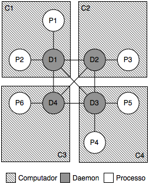
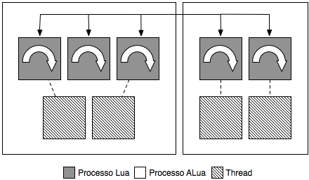

| Página Inicial | Download | Documentação |
O Alua permite a criação de sistemas paralelos e distribuídos. Estes sistemas serão composto de processos interligados executando em um ambiente distribuído e que realizam troca mensagem entre si. Na figura a seguir temos um exemplo de um sistema ALua.

Quantro processos daemons estao formando uma rede (em computadores diferentes) com processos conectado a eles. Assim o processo P1 é capaz de enviar uma mensagem para o processo P4 através da rede de daemons (D1, D2, D3 e D4). Os processos P1, P2, P3, P4, P5 e P6 são processos ALua e este são compostos por um ou mais processos Lua conforme pode ser visto na próxima figura.

Em cada processo ALua existe um pool de threads que executam o loop de eventos dos seus processos Lua. Assim os tipos de processos que um sistema ALua podem ter são os seguinte:
| Tipo | Descrição |
|---|---|
| Daemon | É o processo responsável por criar os identificadores únicos dos processos ALua a ele ligados. Este identificar é derivado do próprio identificador do daemon que é composto pelo seu endereço ip e porta. Uma rede de daemons é composta por conexões diretas entre todos os daemons participantes, e estas conexões são utilizadas para o roteamento de mensagens entre os processos. |
| Processo ALua | Executa as tarefas de um sistema baseado em ALua. Pode ter diversos processo Lua a ele associados (veja a seguir) e é o responsável pela criação dos seus identificadores únicos. Serve como um roteador para as mensagens recebidos pelos processos Lua sob sua responsabilidade. |
| Processo Lua | É em essência um estado Lua (uma instância da VM de Lua) e é isolado dos demais estados. Assim um processo ALua é um processo do SO com um ou diversos processos Lua com apenas um deles sendo o processo principal que irá desempenhar as função do processo ALua listadas acima. |
Faça o download do código fonte aqui.